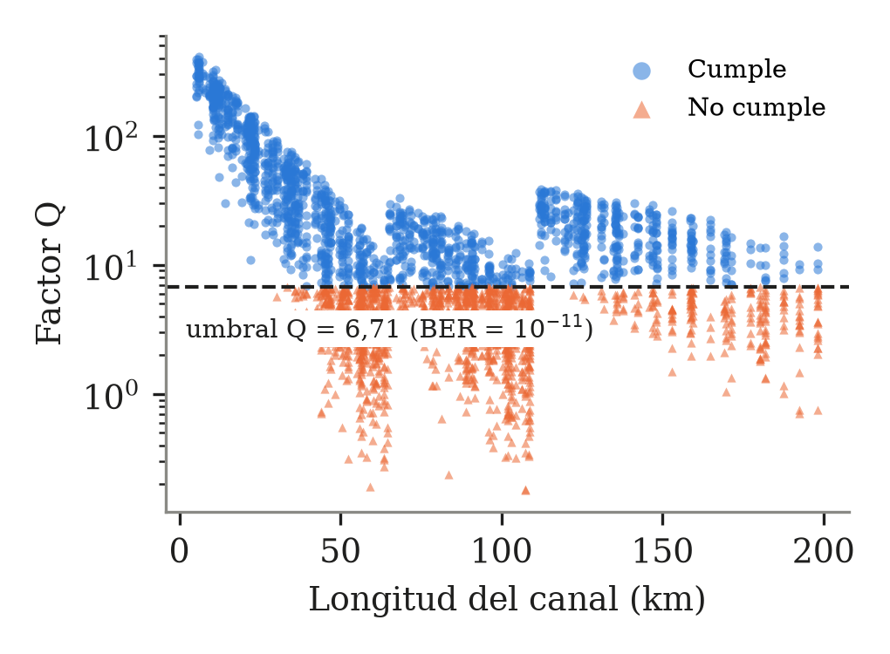
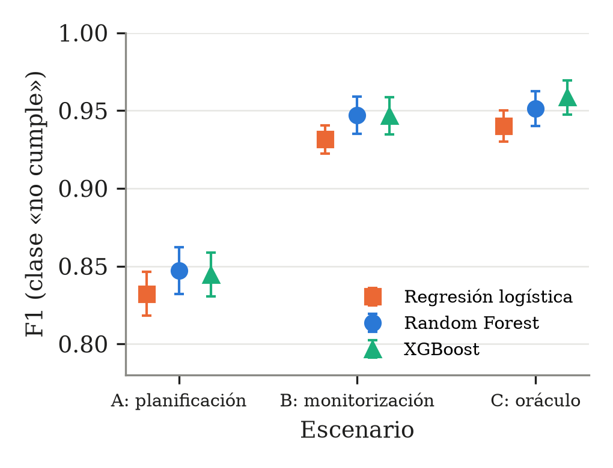
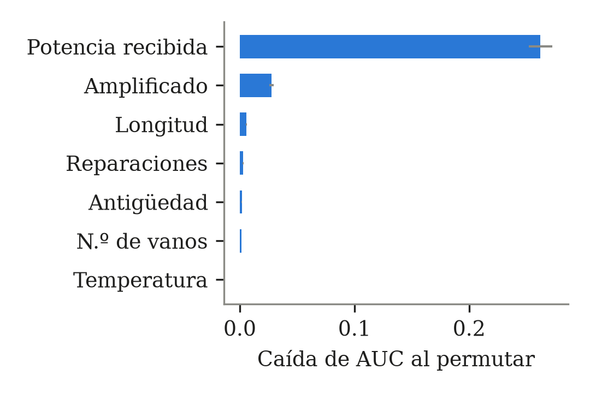

.bibLa práctica pide ir del problema científico al artículo en cinco pasos. Hasta ahora hemos completado tres. La idea de fondo es sencilla: tu trabajo de fin de grado (TFG, RUT MIIT 2026) diseñó una red DWDM de fibra óptica para el tramo ferroviario Moscú-Kazánskaya – Riazán-1 y comprobó con una fórmula que el caso más desfavorable cumplía la calidad exigida. Nosotros preguntamos si un modelo de aprendizaje automático puede decir, para cualquier canal y con la red envejecida, si cumple o no esa calidad.
La Fig. 1 resume el recorrido completo, de izquierda a derecha y de arriba abajo. Cada caja corresponde a una sección de esta guía.
.bibsimulador.pyTodo está guardado en tu repositorio de GitHub angelluisacosta99-bit/Molu, dentro de la carpeta
master-sistemas-inteligentes/metodologia-de-la-investigacion/practica-del-problema-al-articulo/.
La Tabla 1 lista las carpetas y qué contiene cada una.
| Carpeta | Contenido principal |
|---|---|
paso-1-planteamiento/ | generar_ficha.py (genera la ficha), ficha-paso-1.pdf/.docx (mi versión) y Angel_Luis_Acosta_Gonzalez_Paso1-version-final.pdf (la tuya, la entregada). |
paso-2-bibliografia/ | referencias.bib (10 artículos), las exportaciones originales de Web of Science, notas-de-lectura.md (resumen de los 10 artículos). |
paso-3-experimento/ | simulador.py (modelo físico y datos), experimento.py (modelos, evaluación, figuras), experimento.ipynb (cuaderno), datos/, resultados/, figuras/, generar_resumen.py y resumen-paso-3.pdf. |
plantilla-lncs/ | La plantilla LaTeX de Springer LNCS que dio la profesora (para el Paso 5). |
../materiales-de-clase/ | Presentación de la asignatura, artículos y pósters de ejemplo, guías de redacción, citas, póster y LaTeX. |
Qué pedía la profesora: una ficha de una página con el problema, la pregunta de investigación, la novedad, los objetivos y una hipótesis.
De dónde salió el contenido:
Herramientas: el script generar_ficha.py (Python) escribe el mismo texto en dos formatos: HTML, que
Chromium (el navegador) convierte en PDF A4 con Times New Roman 11 pt, y Word (.docx) con la librería
python-docx. Tú hiciste después tu versión final en Word y es la que se entregó.
.bibQué pedía: un archivo referencias.bib con 8-10 artículos de bases de datos científicas (WoS, Scopus,
IEEE), exportado con un gestor bibliográfico.
("quality of transmission" OR QoT) AND ("machine learning" OR "random forest") AND ("optical network*" OR DWDM).
Salieron 50 registros (wos-export-2026-09-29.txt).savedrecs-wos-corto-original.bib).referencias.bib, la misma exportación con claves
cortas (rottondi2018, kozdrowski2021…) y el DOI que faltaba de Samadi 2017. Se validó con la
librería pybtex, que lee el archivo como lo haría LaTeX y confirma que hay 10 entradas sin errores.notas-de-lectura.md resume los 10 artículos. De ellos salieron decisiones del Paso 3:
Random Forest por Rottondi y Kozdrowski; cuidar el desbalance de clases por Kozdrowski; no dar a los modelos las causas
ocultas, siguiendo a Aladin 2020.Qué pedía: un diseño experimental con al menos una tabla y una figura, entregando datos y código.
Dónde se ejecutó: yo (Claude, el asistente de IA) escribí y ejecuté el código en un ordenador Linux en la nube
(el entorno de Claude Code), con Python 3.11. Todo quedó guardado en tu repositorio. El cuaderno
experimento.ipynb se entrega ya ejecutado: al abrirlo en VS Code se ven los resultados sin ejecutar nada. Si lo
ejecutas tú (sección 11), obtendrás los mismos datos, porque usamos una «semilla» fija.
La Tabla 2 recoge el lenguaje y cada librería, con la versión exacta usada y para qué sirvió.
| Herramienta | Versión | Para qué |
|---|---|---|
| Python | 3.11.15 | Lenguaje de programación de todo el experimento. |
| NumPy | 2.4.6 | Cálculo numérico: fórmulas y números aleatorios. |
| pandas | 3.0.6 | Tablas de datos (el dataset y la tabla de resultados); guarda el CSV y el .tex. |
| SciPy | 1.17.1 | Función erfc (paso de Q a BER) y distribución χ² (McNemar). |
| scikit-learn | 1.9.1 | Regresión logística, Random Forest, validación cruzada, métricas, importancia por permutación. |
| XGBoost | 3.2.0 | El tercer modelo (gradient boosting). |
| Matplotlib | 3.11.2 | Las tres figuras (PNG a 300 ppp y PDF vectorial). |
| Jupyter (nbformat) | — | El cuaderno experimento.ipynb, creado por crear_cuaderno.py. |
| Chromium | — | Convierte HTML en PDF (ficha del Paso 1, resumen del Paso 3 y esta guía). |
semilla=42)? Los números «aleatorios» de un ordenador salen
de una receta fija que arranca en un número inicial. Con la misma semilla sale exactamente la misma secuencia, como
barajar las cartas siempre igual. Por eso cualquiera que ejecute el código obtiene los mismos 10 000 canales y los mismos
resultados. El 42 no tiene ningún significado; solo importa que sea siempre el mismo.El archivo simulador.py contiene un modelo de cómo viaja la luz por la fibra y llega al receptor. No es un
modelo inventado: son las fórmulas estándar de los sistemas ópticos de 10 Gbit/s con modulación NRZ y detección directa
(IM/DD, como tu red). Con él calculamos, para cada canal, si cumple o no.
La Tabla 3 lista todas las constantes del código (primeras líneas de simulador.py) con su origen. Es la
tabla más importante para defender el trabajo: separa lo que viene de tu TFG de lo que es una suposición nuestra.
| Constante (código) | Valor | Significado | Origen |
|---|---|---|---|
ESTACIONES_KM | 21 estaciones, 0-198,3 km | Kilómetro de cada estación | TFG (tabla de estaciones). Se omite Rýbnoye porque su kilómetro no se lee en la tabla. |
ALFA_NOMINAL | 0,22 dB/km | Atenuación de la fibra G.652 a 1550 nm | TFG |
LONG_CONSTRUCCION, PERDIDA_EMPALME | 4 km; 0,1 dB | Un empalme de fábrica cada 4 km, 0,1 dB cada uno | TFG |
SENSIBILIDAD | −25 dBm | Potencia mínima del receptor | TFG |
PERDIDA_CONECTORES | 1,0 dB | Dos conectores | Valor típico de ficha técnica (0,5 dB por conector) |
PERDIDA_OADM | 5,0 dB | Multiplexor + demultiplexor | Valor típico de ficha técnica. Simplificación: se aplica igual a todos los canales. |
Q_SENSIBILIDAD | 7,03 | Q en la sensibilidad (BER = 10−12) | Cálculo: BER(7,03) = 1,03·10−12 |
Q_UMBRAL | 6,71 | Q mínimo exigido (BER = 10−11) | Norma del TFG; comprobado: BER(6,71) = 9,7·10−12 |
MARGEN_DISENO | 3 dB | Si el margen nominal es menor, se pone amplificador | Suposición de diseño (margen habitual) |
DISPERSION | 17 ps/(nm·km) | Dispersión cromática de la fibra G.652 | Valor estándar de la norma UIT-T G.652 |
TOLERANCIA_DISP | 1600 ps/nm | Dispersión que tolera el transceptor | Valor típico de transceptor de 10G (suposición) |
BO_BE | 12,5/7,5 ≈ 1,67 | Ancho óptico de referencia (0,1 nm = 12,5 GHz) / ancho eléctrico del receptor (7,5 GHz) | Valores estándar para 10G |
| Figura de ruido del EDFA | 6-7 dB (+ envejecimiento) | Ruido que añade el amplificador | TFG (rango de 6-9 dB) |
(a) Elegir un canal. Un canal va de una estación a otra. Hay 208 pares posibles separados por al menos 5 km; el código elige uno al azar para cada una de las 10 000 filas. Su longitud d es la diferencia de kilómetros.
(b) Pérdida nominal (la red recién instalada). Es la suma de todo lo que «se come» la señal:
(⌈ ⌉ significa redondear hacia arriba: 33,4/4 = 8,35 → 9 empalmes.) En código: perdida_nominal(d_km).
(c) Regla de diseño: ¿lleva amplificador? El láser emite 0 dBm. Si la potencia que llega (−Pérdida) supera la sensibilidad (−25 dBm) en menos de 3 dB, el diseñador pone un preamplificador EDFA:
Con estos números, todo canal de más de 65 km va amplificado (a 65,0 km el margen es justo 3 dB). Los amplificados llevan un EDFA cada 110 km como máximo: número de vanos n = ⌈d/110⌉ (1 o 2 en esta línea).
(d) Envejecimiento y averías (la red en explotación). Aquí entra el azar. La Tabla 4 resume qué se sortea para
cada canal (líneas «Estado de explotación» y «Causas físicas ocultas» de generar()). Estos rangos son
supuestos del estudio, no salen del TFG, y habrá que declararlos así en el artículo.
| Qué | Cómo se sortea | ¿Lo ve el operador? |
|---|---|---|
| Antigüedad | Uniforme 0-25 años | Sí |
| Temperatura | Uniforme −30 a 35 °C (clima de Riazán) | Sí |
| Averías reales | Poisson con media = tasa × d × años; tasa uniforme 0,002-0,015 por km y año | No |
| Averías registradas | Cada avería real se registra con probabilidad 0,6 (binomial) | Sí |
| Pérdida por reparaciones | 2 empalmes por avería, cada uno uniforme 0,05-0,5 dB | No |
| Atenuación envejecida | 0,22 + (0-0,0015)×años + 0,0002×(frío bajo 0 °C)/10 dB/km | No |
| Empalmes de fábrica | ⌈d/4⌉ × Normal(0,1; 0,02) dB, mínimo 0,03 | No |
| Hielo | Si hace menos de −5 °C, con probabilidad 0,30: pérdida uniforme 0,5-5 dB | No |
| Conectores sucios | 1,0 + exponencial de media 0,4 dB | No |
| Potencia del láser | Normal(0; 0,3) dBm − (0-0,1 dB)×años | No |
| Figura de ruido del EDFA | Uniforme 6-7 dB + (0-0,08 dB)×años | No |
| Dispersión residual (amplificados) | Uniforme −250 a 250 ps/nm (queda tras compensar) | No |
(e) Potencia recibida real. Se suman todas las pérdidas reales y, si hay varios vanos, se reparten entre ellos. La potencia calculada es la de la entrada de cada amplificador o del receptor:
(f) Factor Q. El factor Q mide la separación entre «0» y «1» frente al ruido: cuanto mayor, menos errores. Se calcula distinto según el tipo de canal.
(g) Penalización por dispersión cromática. Los pulsos se ensanchan al viajar. En los canales sin amplificar la dispersión acumulada es 17·d ps/nm; en los amplificados, la residual tras compensar. La penalización se resta de Q:
(h) BER y etiqueta. De Q se pasa a la tasa de errores con la fórmula estándar, y se decide si cumple:
(i) Medición que hace el operador. El transceptor SFP mide la potencia recibida con un error de ±0,5 dB:
p_rx_medida = Prx + Normal(0; 0,5). Es la variable clave del escenario B.
Para que veas las fórmulas funcionando, la Tabla 5 calcula tres canales con valores nominales (sin azar) y NF = 6,5 dB.
Los números salen de ejecutar las funciones de simulador.py.
| Canal | Pérdida nominal | Margen | ¿Amplificado? | Cálculo | Q |
|---|---|---|---|---|---|
| 33,4 km | 7,35 + 9·0,1 + 1 + 5 = 14,25 dB | 10,75 dB | No | Qt = 7,03·101,075 = 83,6; D = 568 ps/nm → penalización 0,25 dB | 78,9 |
| 108,9 km (caso del TFG) | 23,96 + 28·0,1 + 1 + 5 = 32,76 dB | −7,76 dB | Sí, 1 vano | P = −32,76 dBm; OSNR = 58 − 32,76 − 6,5 = 18,74 dB; QASE = 10,54 | 10,4 |
| 145,8 km | 41,78 dB | −16,8 dB | Sí, 2 vanos | P = −20,89 dBm por vano; OSNR = 58 − 20,89 − 6,5 − 3,01 = 27,6 dB; QASE = 30,3 | 27,9 |
generar(n=10000, semilla=42) repite el cálculo de la sección 6 para 10 000 canales y guarda el resultado en
datos/dataset.csv, una tabla que se abre con Excel. La Tabla 6 describe sus columnas. Las que empiezan por
oculta_ son causas que el operador no puede medir: no se dan a los modelos (salvo en el escenario C, de
referencia).
datos/dataset.csv.| Columna | Tipo | Qué es |
|---|---|---|
longitud_km, amplificado, n_vanos | Observable (inventario) | Longitud; 1 si lleva EDFA; número de vanos |
antiguedad_anios, reparaciones_registradas, temperatura_c | Observable (inventario) | Años en servicio; averías apuntadas; temperatura |
p_rx_medida_dbm | Observable (monitorización) | Potencia recibida medida por el transceptor (±0,5 dB) |
oculta_* (5 columnas) | Oculta | Pérdida por reparaciones, hielo y conectores; figura de ruido; atenuación real |
q, ber | Resultado físico | Q efectivo y BER calculados |
cumple | Etiqueta | 1 = cumple BER ≤ 10−11; 0 = no cumple |
Cifras del dataset (calculadas sobre el CSV): 10 000 canales de 5,4 a 198,3 km; el 50,3 % (5028) van amplificados: 2698 con 1 vano y 2330 con 2; no cumple el 20,4 % (2039 canales). Por debajo de 40 km cumple el 99 %.
Los tres reciben las variables observables de un canal y responden «cumple» o «no cumple». Aprenden de ejemplos: se les enseñan canales con la respuesta correcta y ajustan sus reglas internas.
StandardScaler) para que
todas pesen en la misma escala.
Pesos de clase: como hay menos canales «no cumple», se les da más peso. En la logística y en Random Forest con
class_weight="balanced"; en XGBoost con scale_pos_weight = 79,6/20,4 ≈ 3,9.
Tres escenarios (según qué variables ve el modelo):
No se puede evaluar un modelo con los mismos datos con los que aprendió, porque sería como corregir un examen cuyas
respuestas el alumno ya había visto. La validación cruzada divide los 10 000 canales en 10 partes («pliegues»): entrena con
9 y evalúa con la restante, 10 veces, rotando. «Estratificada» significa que cada parte mantiene el 20,4 % de «no cumple».
Todo se repite 3 veces con mezclas distintas: 30 evaluaciones por modelo y escenario. La tabla da la media ± desviación
típica de esas 30. Código: RepeatedStratifiedKFold(n_splits=10, n_repeats=3, random_state=42) y
cross_validate.
Clase positiva = «no cumple» (lo que interesa detectar). Con VP = no cumple detectados, FN = no cumple que se escapan, FP = falsas alarmas y VN = cumple bien clasificados:
Compara dos modelos sobre los mismos canales de prueba: 30 % de los datos (3000 canales, 612 «no cumple»),
separados con train_test_split(..., test_size=0.3, stratify=y, random_state=42). Solo cuentan los casos en que
uno acierta y el otro falla:
p < 0,05 indica que la diferencia no se debe al azar. Los números están en resultados/mcnemar.txt y la
función es mcnemar() de experimento.py.
experimento.py guarda las 9 filas (3 escenarios × 3 modelos) con pandas en dos formatos:
resultados/tabla_resultados.csv (para Excel) y tabla_resultados.tex (código LaTeX listo para
pegar en el artículo LNCS). La Tabla 7 reproduce esos resultados.
| Escenario | Modelo | AUC | Exact. equilibrada | Sensibilidad | F1 |
|---|---|---|---|---|---|
| A | Regresión logística | 0,983 ± 0,003 | 0,929 ± 0,009 | 0,939 ± 0,017 | 0,832 ± 0,014 |
| A | Random Forest | 0,981 ± 0,003 | 0,921 ± 0,011 | 0,901 ± 0,023 | 0,847 ± 0,015 |
| A | XGBoost | 0,982 ± 0,003 | 0,925 ± 0,010 | 0,914 ± 0,019 | 0,845 ± 0,014 |
| B | Regresión logística | 0,998 ± 0,001 | 0,977 ± 0,004 | 0,987 ± 0,007 | 0,931 ± 0,009 |
| B | Random Forest | 0,998 ± 0,001 | 0,976 ± 0,007 | 0,974 ± 0,012 | 0,947 ± 0,012 |
| B | XGBoost | 0,998 ± 0,001 | 0,973 ± 0,008 | 0,964 ± 0,014 | 0,947 ± 0,012 |
| C | Regresión logística | 0,998 ± 0,001 | 0,980 ± 0,004 | 0,991 ± 0,006 | 0,940 ± 0,010 |
| C | Random Forest | 0,998 ± 0,001 | 0,978 ± 0,006 | 0,976 ± 0,011 | 0,951 ± 0,011 |
| C | XGBoost | 0,999 ± 0,001 | 0,978 ± 0,007 | 0,969 ± 0,012 | 0,958 ± 0,011 |
Cómo leerla: en B, los ensambles tienen mejor F1 (0,947 frente a 0,931), pero la logística detecta más canales que fallan (sensibilidad 0,987) a costa de más falsas alarmas. El AUC es prácticamente igual en todos. Por eso decimos que la hipótesis se cumple solo en parte.
Se dibujan con Matplotlib al final de experimento.py y se guardan en figuras/ en PNG
(300 ppp) y en PDF (vectorial, para LaTeX). Los colores siguen una paleta comprobada para daltonismo. La Fig. 2 es el
factor Q frente a la longitud.

fig1_q_vs_longitud; es la Fig. 1 del resumen).
Por claridad se dibujan 1500 puntos de cada clase, eje vertical logarítmico y línea discontinua en Q = 6,71.La Fig. 3 muestra el F1 de la Tabla 7 como puntos con barras de error (media ± desviación típica), para comparar escenarios y modelos de un vistazo.

fig2_f1_escenarios; es la Fig. 2 del resumen).La Fig. 4 es la importancia por permutación: sobre el 30 % de prueba y con el Random Forest del escenario B, se
desordena una columna cada vez y se mide cuánto baja el AUC (10 repeticiones). Si al desordenar una variable el modelo
empeora mucho, esa variable es importante. Código: permutation_importance(..., scoring="roc_auc", n_repeats=10).

fig3_importancia; es la Fig. 3 del resumen).crear_cuaderno.py genera experimento.ipynb: un cuaderno guiado que comprueba el caso del TFG,
genera los datos, llama a experimento.py (%run experimento.py) y muestra la tabla y las figuras.generar_resumen.py lee el CSV y las figuras, escribe una página HTML y Chromium la convierte en
resumen-paso-3.pdf (2 páginas). Cumple la regla de la profesora: cada tabla y figura se cita antes de aparecer.py -m pip install -r requirements.txt
paso-3-experimento en VS Code y el archivo experimento.ipynb.datos/, resultados/ y figuras/. Sin cuaderno, en la terminal:
python experimento.py
dataset.csv), sí: dependen solo de la
semilla. Las métricas pueden variar en la tercera cifra decimal si tu versión de scikit-learn o XGBoost es distinta de la
de la Tabla 2. No cambia ninguna conclusión.¿Por qué datos sintéticos? No existen datos públicos de calidad de canales de redes ferroviarias envejecidas. Rottondi et al. (2018) y Aladin et al. (2020) también entrenan con datos sintéticos de modelos físicos. Es un primer paso; la validación con datos reales queda como trabajo futuro (por ejemplo, el conjunto de datos de Microsoft que usan Allogba y Di Cicco).
¿De dónde salen las fórmulas? Son las estándar de un enlace óptico IM/DD: balance de potencia, Q térmico, OSNR con la regla de 58 dB, Q con ruido señal-ASE, penalización por dispersión y BER = ½·erfc(Q/√2). Los parámetros del TFG están en la Tabla 3; el resto son valores típicos o supuestos que se declaran.
¿Qué es la «circularidad»? La etiqueta sale del mismo modelo físico que genera las variables, así que la tarea es más fácil que con datos reales (AUC ≥ 0,98). Por eso ocultamos las causas físicas a los modelos, y lo declaramos como la limitación principal.
¿Por qué la logística tiene el mismo AUC que los ensambles? Porque la relación entre potencia medida y calidad es casi monótona (a menos potencia, peor Q), algo que un modelo lineal capta bien. Los ensambles ganan en F1 porque colocan mejor el punto de corte, no porque ordenen mejor los canales.
¿Por qué 10 pliegues × 3 repeticiones? Diez pliegues es el estándar; repetir tres veces da 30 medidas y una desviación típica fiable.
¿Por qué semilla 42? El valor da igual; lo importante es fijarlo para que el experimento sea reproducible.
¿Por qué la hipótesis «se cumple solo en parte»? McNemar muestra que Random Forest acierta significativamente más (p = 7·10−5), pero el AUC es igual y la logística detecta más fallos. Un resultado matizado también es válido: el artículo de Espejo et al. que usa la profesora de ejemplo publica una hipótesis que no se cumple.
¿Usaste inteligencia artificial? Respuesta honesta: sí, un asistente (Claude) programó el simulador y el experimento a partir de tu TFG, y tú dirigiste las decisiones y revisaste los resultados. Conviene decirlo si te lo preguntan, y comprobar si la asignatura pide declararlo en el artículo (muchas revistas lo exigen ya en un apartado de agradecimientos o de métodos). Lo que te protege es poder explicar cada paso, y para eso es esta guía.
La Tabla 8 relaciona cada cifra que aparece en el resumen del Paso 3 con el archivo o el cálculo del que sale.
| Dato | Dónde se calcula | Dónde queda guardado |
|---|---|---|
| 10 000 canales, 5-198 km | simulador.generar(n=10000, semilla=42) | datos/dataset.csv |
| α = 0,22 dB/km; sensibilidad −25 dBm; estaciones | Constantes de simulador.py | TFG (Tabla 3) |
| Q = 6,71 ⇔ BER = 10−11 | ber_desde_q() | Q_UMBRAL en simulador.py |
| No cumple el 20,4 % | 1 − df.cumple.mean() | Salida de experimento.py y del cuaderno |
| Cumple el 99 % por debajo de 40 km; fallos entre 40 y 110 km | Recuento por tramos de longitud sobre el CSV | Cálculo de comprobación (pandas crosstab) |
| AUC, exactitud equilibrada, sensibilidad, F1 | cross_validate con CV 10×3 | resultados/tabla_resultados.csv y .tex |
| McNemar 44/13 y 54/23, p | mcnemar() sobre el 30 % de prueba | resultados/mcnemar.txt |
| AUC de 0,98 (A) a 0,998 (B) | Columna AUC de la tabla | tabla_resultados.csv |
| Potencia recibida = variable decisiva | permutation_importance | figuras/fig3_importancia.* |
| Q ≈ 10,5 en 108,9 km | Celda 1 del cuaderno (q_ase) | experimento.ipynb |